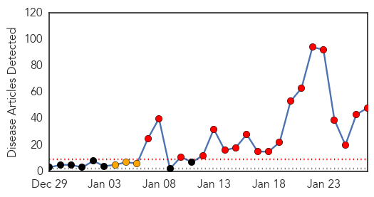
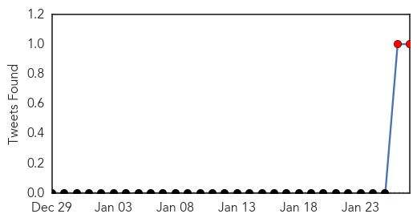
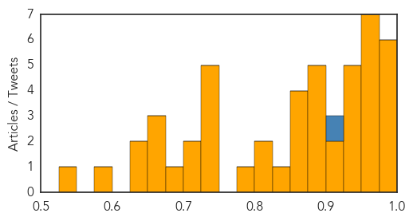

Measles
30-Day Web Trend
19 alerts, 3 warnings

30-Day Twitter Trend
2 alerts, 0 warnings

Article Locations

Article Confidences
Top Articles:
- 1.000
- What Infectious Diseases Kentuckians Do (and Don't) Have to Really Worry About
- 0.994
- Measles outbreak causes concerns over vaccination rates
- 0.989
- California Measles Outbreak Grows to 73 Cases
- 0.988
- News, Sports, Jobs, Michigan, Community Information - The Alpena News
- 0.979
- Map: Measles FAQ: Where to get vaccinated, who should do it and more
- 0.976
- Discussion of Vaccinating Following Measles Outbreak - KULR8.com
- 0.973
- Six more measles cases reported in California after Disneyland outbreak
- 0.971
- California Measles Outbreak Grows to at Least 73 Cases: Health Officials
- 0.968
- What you need to know
- 0.963
- Origins of Disney-linked measles may never be known
- 0.958
- Me, Mickey, and Measles
- 0.958
- Guest columns: Vaccines are necessary
- 0.952
- Confirmed Case of Measles Reported; Exposure to Virus...
- 0.943
- Illinois Reports Confirmed Case Of Measles
- 0.935
- Measles Outbreak Spreads: 87 Cases, 7 States, Plus Mexico
- 0.932
- SCHNEIDEREIT: Past scourge of measles ancient history to many
- 0.928
- Illinois Confirms Its First Case Of Measles In 2015
- 0.927
- Multistate Measles Outbreak Drives Up State Health Agency Costs and Points to Importance of Quality Immunization Communication
- 0.915
- Measles sufferer visited businesses in Gilroy, Milpitas
- 0.903
- 30 babies placed under home isolation as California grapples with measles outbreak
- 0.899
- Measles Outbreak in Beijing's High-rise Building Under Control
- 0.891
- Dozens quarantined as health agencies try to stem measles outbreak
- 0.890
- Disney Land Employees Fully Covered by MMR Vaccine Still Received Measles
- 0.886
- Measles confirmed in Cook County's northwest suburbs
- 0.885
- Health Officials Urge Taking Precautions Against Measles
- 0.872
- Doctors Focus on ‘Vaccine-Hesitant’ to Fight Outbreaks
- 0.869
- Anti-Vaxers Feel the Heat As Measles Outbreak Spreads
- 0.869
- Health professionals confirm 59 measles cases in California
- 0.866
- Illinois reports year's first measles case
- 0.835
- Measles spreads in California, comes to Illinois
- 0.823
- National vaccination rates haven't dropped, despite anti-vax hype
- 0.820
- Odds catch up with unvaccinated Disneyland visitors
- 0.787
- Measles case in Omaha, another in Lincoln raises concerns
- 0.745
- Latest Report Indicates 64 Measles Cases Linked to Disneyland
- 0.739
- California Straight Chiropractor Fights Disney Measles Mania
- 0.731
- Sioux Falls elementary school student diagnosed with measles
- 0.727
- Measles Outbreak Was Inevitable but Can Be Halted, UAB Doctor Says
- 0.727
- Some Parents Choose To Put Kids in Harm's Way
- 0.720
- Why This Year's Measles Outbreak is Concerning and May Break Records
- 0.704
- IWF -Some Parents Choose To Put Kids in Harm's Way
- 0.679
- Anti-vaccine parents boost measles comeback: Our view
- 0.662
- Measles outbreak that began at Disneyland grows to 87 cases
- 0.659
- Adults May Feel Impact Of Measles Outbreak
- 0.657
- Doctor explains why he lets kids avoid the measles vaccine
- 0.647
- For measles protection, encourage all to get vaccinated
- 0.630
- Two contract measles from Arizona family who went to Disneyland
- 0.576
- Gavi's Goal: Vaccinate Millions More Children
- 0.532
- Measles in Alaska? State health department waits for results
Top Tweets:
- 0.917
- how about measles & mumps? infectious disease
Influenza
30-Day Web Trend
1 alerts, 0 warnings

30-Day Twitter Trend
0 alerts, 0 warnings

Article Locations

Article Confidences

Top Articles:
- 1.000
- Flu cases double to 2,372 in El Paso, health officials say
- 0.999
- DHMC Units Beset By Flu
- 0.997
- Santa Clara County records first flu death, patient under 65
- 0.997
- Santa Clara County's first flu death of season
- 0.997
- Coeur d'Alene Press: Local News
- 0.995
- 16 Die of Flu-related Diseases Statewide, None in Magic Valley
- 0.992
- First Case of Human Bird Flu in North America Confirmed, a Second Possible
- 0.992
- Ethicist Wants Mandatory Flu Shots for Health Workers
- 0.988
- UN Warns of Bird Flu Increase in China
- 0.987
- Human infection with avian influenza A(H7N9) virus – China
- 0.985
- Gaping holes exist in Maine's readiness for a public health emergency
- 0.973
- Schools Get A Day Out For Snow, But Not Likely For Influenza
- 0.970
- CHP closely monitors first human case of avian influenza A(H7N9) in Canada
- 0.956
- H7N9 Avian Flu Virus Enters Canada, B.C. Woman Who Travelled To China Tests Positive
- 0.932
- Flu Scan for Jan 27, 2015
- 0.832
- Seasonal influenza: 13 deaths since the beginning of January
- 0.811
- Canada Confirms First Case of H7N9 Bird Flu in North America
- 0.810
- Canada has its first case of Avian flu
- 0.766
- North America has 1st case of H7N9 bird flu
- 0.726
- Avian Influenza Outbreak Confirmed In Ogun
- 0.722
- Nigeria, Israel, West Bank fight avian flu in poultry
- 0.695
- Ogun Government Confirms Bird Flu In Ota, Sagamu, Others
- 0.675
- TB case confirmed in Vermont school worker
- 0.631
- Agencies Scramble to Contain Bird Flu
- 0.611
- Canada reports first H7N9 case
Top Tweets:
- 0.511
- RT: Dr Chan: Currently we face threats from MERS new strains of avian influenza human cases H5N1 H7N9 w/ high fatality rate EB…